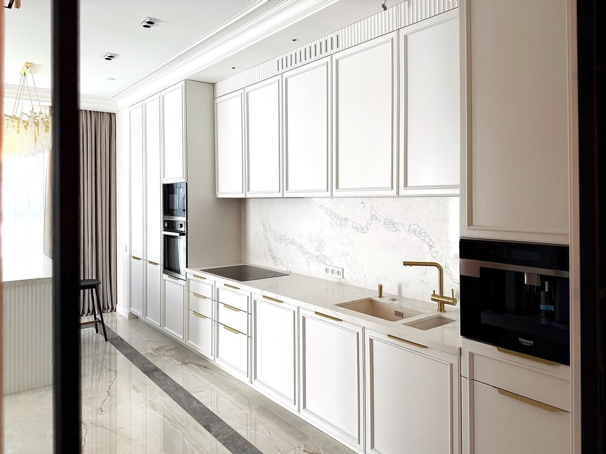

КУХНИ ПО ИНДИВИДУАЛЬНЫМ ПРОЕКТАМВаш стиль.
Ваш стиль.
В каждой детали.
Кухни, шкафы и гардеробные в едином интерьере. Создадим проект под ваше пространство и представление о доме.
Рассчитать мою кухню
Проект из портфолио Ziti CucineОТ ОБЩЕГО ВИДА К ДЕТАЛЯМВпечатляет вид.
Впечатляет вид.
Радует каждый день.
Фасады, столешница, размещение техники и системы хранения. Подберём сочетание, в котором стиль кухни поддержан её удобством.
Обсудить мой проект